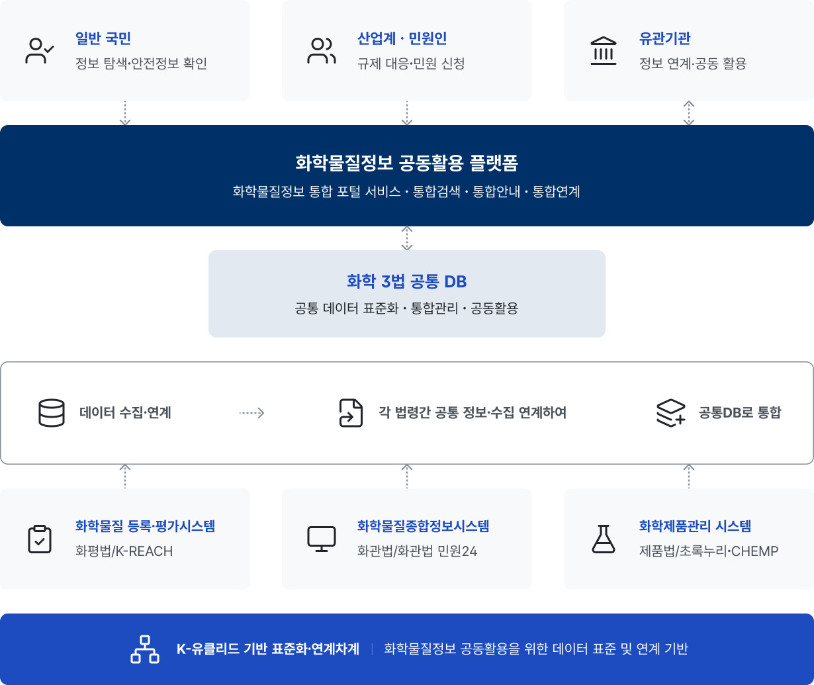

공동활용플랫폼 소개
화학 3법 정보의 통합∙연계를 통한 국민∙산업계 서비스 제공

신뢰받는 화학 안전을 확보하고, 기업과 함께 성장하는 선진화된 규제 이행 환경을 조성합니다.
구축 배경
민원 절차의 간소화, 규제 대응 부담 완화 및 국민의 알권리 보장을 위해 분산된 화학 3법 정보를 통합·연계·제공합니다.
* 화학물질등록평가법·화학물질관리법·화학제품안전법
-
1. 정보통합 및 연계
화학3법 규제 대응을 위해 필요한 민원인 및 화학물질 정보를 각각 통합하고 중복 입력 정보 연계를 통해 민원 절차 간소화 및 규제 대응 부담을 완화시키고자 합니다.
-
2. 정보 제공
민원인을 포함한 일반인이 화학물질의 유해성·위해성에 관한 정보를 쉽게 활용할 수 있도록 화학물질 정보를 제공합니다.
구축 목적
화학물질정보의 체계적 관리와 유관 기관*·시스템**과의 정보 공동활용 기반을 마련합니다.
* 기후환경에너지부·한국환경공단·화학물질안전원 등
** 화관법 민원24(화관법 시스템)·초록누리(제품법 시스템)
-
화학물질정보 공동활용
업무모델 정립 -
화학물질관리 시스템 간
정보교환·공유 플랫폼 설계 -
사용자 중심 화학물질 정보
등록, 공유, 활용 서비스 제공 -
최신 기술 적용 및
인프라 도입
주요 특징
핵심 가치와 차별화된 특징을 통해 통합 서비스의 방향성을 제시합니다.
-
1. K-유클리드 도입
화학 3법 민원인 이행 의무사항 입력정보를 통합 DB를 기반으로 연계하여, 민원 업무를 더욱 빠르고 정확하게 처리할 수 있습니다.
-
2. 화학물질/화학제품 정보 통합 제공
분산된 화학물질 및 생활화학제품 정보를 하나의 플랫폼으로 통합함으로써, 효율적인 정보 접근성을 제공합니다.
-
3. 국민 중심 통합 서비스 제공
국민이 쉽고 직관적으로 화학물질 정보 및 의무사항을 이해하고 활용할 수 있도록 사용자 중심의 편의 서비스를 제공합니다.
K-유클리드란?
K-유클리드는 EU·국제 화학물질 관련규제 대응을 위해 활용되고 있는 ‘I-UCLID’ 정보 전달 양식에서 착안하여 개발된 화학물질정보 공동활용 플랫폼 환경에 적합하도록 설계한 국내 최초의 화학물질 정보전달양식입니다.
K-유클리드를 통하여 화학 3법 의무사항을 이행해야 하는 민원인은, 통합 DB 기반의 화학물질 정보들을 이행해야 하는 법령 및 법령에 따라 용이하게 전달·연계가 가능해지며, 반복적인 정보 입력 업무를 최소화해 보다 높은 정확성과 편의성을 확보합니다.
공동활용플랫폼 주요 서비스 안내
화학물질의 안전 정보를 통합 제공하여 국민이 쉽고 편리하게 확인할 수 있도록 지원합니다.
-
1. 화학물질 특성 통합검색 및 정보공개
화학물질의 물성, 유해성, 분류·표시, 규제정보 등을 관련 법령에 따른 정보공개 의무에 기반하여 제공하며, 통합검색·정보공개·물질검색 등을 단 한 번의 검색으로 모두 해결할 수 있도록 지원합니다.
-
2. 화학물질의 등록 및 평가 등에 관한 법률(화평법) 의무사항 이행
법적 관리 체계에 따라 등록 및 평가된 정보를 기반으로 국민이 안전하게 관리되는 화학물질 정보를 확인할 수 있도록 제공합니다. (향후 화관법 및 제품법 의무사항까지 단계적으로 확대 적용 예정)
-
3. 화학3법 지원사업 확인·바로가기 서비스
화학물질 안전과 관련된 정부 지원사업, 교육, 정책 정보를 제공하고, 관련 서비스를 이용할 수 있도록 안내합니다.
-
4. 화학물질 유해성 및 위해 정보 제공
화학물질의 유해성, 위해성 및 분류·표시 정보를 제공하여 국민이 화학물질의 위험성을 이해하고 안전하게 활용할 수 있도록 지원합니다.
-
5. 화학안전 정보 및 사고 예방 콘텐츠 제공
화학물질의 올바른 사용 방법과 사고 예방을 위한 안전 정보를 제공하여 일상생활 속 화학사고를 예방할 수 있도록 지원합니다.